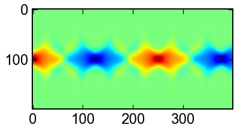
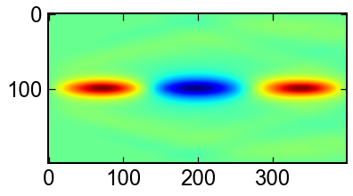

5. 1次元場PDE - 応用編 -¶
5.1. Burgers方程式¶
[1]:
import numpy as np
import matplotlib.pyplot as plt
from scipy.integrate import solve_ivp
ナビエストークス方程式の移流項\(u\partial_x u\)と粘性項\(\partial_{xx} u\)のみを考慮する．
\[\partial_t u + \lambda_1 u\partial_x u = \lambda_2 \partial_{xx} u\]
移流拡散方程式とも呼ばれている．
[2]:
# parameters
nx = 100
Δx = 1.0/(nx-1)
λ1 = 1.0; λ2 = 0.1;
# init
x = np.linspace(0.0,1.0,nx)
u = np.zeros_like(x)
u[10:30] = 1.0
init = u
# time
t_span = [0.,0.5]
t_eval = np.linspace(*t_span,50) # time for sampling
# ODEs
def ODEs(t,u,λ1,λ2,Δx):
du = - λ1 * (np.diff(u)/(Δx))[1:] + λ2 * np.diff(u,2)/(Δx**2)
return np.hstack([0.0,du,0.0])
# solve
sol = solve_ivp(ODEs,t_span,init,method="RK45",t_eval=t_eval,args=(λ1,λ2,Δx))
進行しながら滑らかになる様子が見れる．
[3]:
fig,ax = plt.subplots()
ax.imshow(sol.y.T,cmap='jet')
[3]:
<matplotlib.image.AxesImage at 0x7fa970952ac0>

5.2. KdV方程式¶
コルトヴェーグと，ド・フリースにより定式化された．非線形波を表す方程式．
\[\partial_t u + 6u \partial_x u + \partial_{xxx}u=0\]
パラメータは，この論文を参考にさせていただいた． http://advances.sciencemag.org/content/3/4/e1602614
[4]:
# parameters
nx = 200
Δx = 60./(nx-1)
# init
x = np.linspace(0.0,60.0,nx)
u = np.exp(-((x-10.0)/(5.0))**2)
init = u
# time
t_span = [0.,20.0]
t_eval = np.linspace(*t_span,100) # time for sampling
# ODEs
def ODEs(t,u,Δx):
du = - 6 * u[2:-2] * np.convolve(u,[1.,0.,-1.],'valid')[1:-1]/(2*Δx) - np.diff(u,3)[1:]/(Δx**3)
return np.hstack([0.,0.,du,0.,0.])
# solve
sol = solve_ivp(ODEs,t_span,init,method="RK45",t_eval=t_eval,args=(Δx,),rtol=1e-8)
正規分布の初期速度を置いた．時間の進行とともに幾つかの孤立波になる．
[5]:
fig,ax = plt.subplots()
ax.imshow(sol.y.T,cmap='jet')
[5]:
<matplotlib.image.AxesImage at 0x7fa970952bb0>

5.3. KS方程式¶
蔵元ーシバシンスキー方程式．火砕流の挙動を表すよう定式化された．4階微分が特徴的．拡散の強さが拡散する．
\[\partial_t u + u\partial_x u + \partial_{xx} u + \partial_{xxxx} u = 0\]
[6]:
# parameters
nx = 200
Δx = 100./(nx-1)
# init
x = np.linspace(0.0,60.0,nx)
u = np.exp(-((x-40.0)/(5.0))**2) + np.exp(-((x-60.0)/(5.0))**2)
init = u
# time
t_span = [0.,100.0]
t_eval = np.linspace(*t_span,100) # time for sampling
# ODEs
def ODEs(t,u,Δx):
du = - u[2:-2] * np.convolve(u,[1.,0.,-1.],'valid')[1:-1]/(2*Δx)\
- np.diff(u,2)[1:-1]/(Δx**2)\
- np.diff(u,4) /(Δx**4)
return np.hstack([0.,0.,du,0.,0.])
# solve
sol = solve_ivp(ODEs,t_span,init,method="RK45",t_eval=t_eval,args=(Δx,),rtol=1e-8)
インパクトあって目に楽しい図ができる
[7]:
fig,ax = plt.subplots()
ax.imshow(sol.y.T,cmap='jet')
[7]:
<matplotlib.image.AxesImage at 0x7fa970aaff70>

5.4. Schorodinger方程式¶
理系大学生の関門として名高いシュレディンガー方程式．数値計算を通してイメージを掴んでみよう． 一次元では，定数を1，二次関数型のポテンシャル場\(V(x)=x^2/2\)を考えると以下の形で書ける．
\[i\partial_t \Psi = -\left(\frac{1}{2}\partial_{xx}- \frac{x^2}{2}\right)\Psi\]
ちなみにsolve_ivpはcomplexもrealと変わらず扱える．すごい!
[8]:
# parameters
nx = 200
Δx = 15./(nx-1)
# init
x = np.linspace(-7.5,7.5,nx)
Ψ = 2.*np.exp(-x**2) + 0.j
init = Ψ
# time
t_span = [0.,20.0]
t_eval = np.linspace(*t_span,400) # time for sampling
# ODEs
def ODEs(t,Ψ,Δx):
dΨ = -1.j*(- 0.5*np.diff(Ψ,2)/(Δx**2) + 0.5*(x**2*Ψ)[1:-1])
return np.hstack([0.+0.j,dΨ,0.+0.j])
# solve
sol = solve_ivp(ODEs,t_span,init,method="RK45",t_eval=t_eval,args=(Δx,),rtol=1e-8)
ポテンシャルによって電子波が中心にトラップされている．
[9]:
fig,ax = plt.subplots()
ax.imshow(sol.y[:].real,cmap='jet')
fig,ax = plt.subplots()
ax.imshow(sol.y[:].imag,cmap='jet')
[9]:
<matplotlib.image.AxesImage at 0x7fa9404d8be0>


5.5. Non-linear Schirodinger方程式¶
ポテンシャル関数が\(V(x)=|\Psi|^2\)(引力)のときも有名．
\[i\partial_t \Psi = -\left(\frac{1}{2}\partial_{xx}+ |\Psi|^2\right)\Psi\]
[10]:
# parameters
nx = 200
Δx = 10./(nx-1)
# init
x = np.linspace(-5.0,5.0,nx)
Ψ = 2.*np.exp(-x**2) + 0.j
init = Ψ
# time
t_span = [0.,np.pi]
t_eval = np.linspace(*t_span,400) # time for sampling
# ODEs
def ODEs(t,Ψ,Δx):
dΨ = -1.j*(- 0.5*np.diff(Ψ,2)/(Δx**2) - (np.abs(Ψ)**2*Ψ)[1:-1])
return np.hstack([0.+0.j,dΨ,0.+0.j])
# solve
sol = solve_ivp(ODEs,t_span,init,method="RK45",t_eval=t_eval,args=(Δx,),rtol=1e-8)
[11]:
fig,ax = plt.subplots()
ax.imshow(sol.y[:].real,cmap='jet')
fig,ax = plt.subplots()
ax.imshow(sol.y[:].imag,cmap='jet')
[11]:
<matplotlib.image.AxesImage at 0x7fa960627eb0>


[ ]: